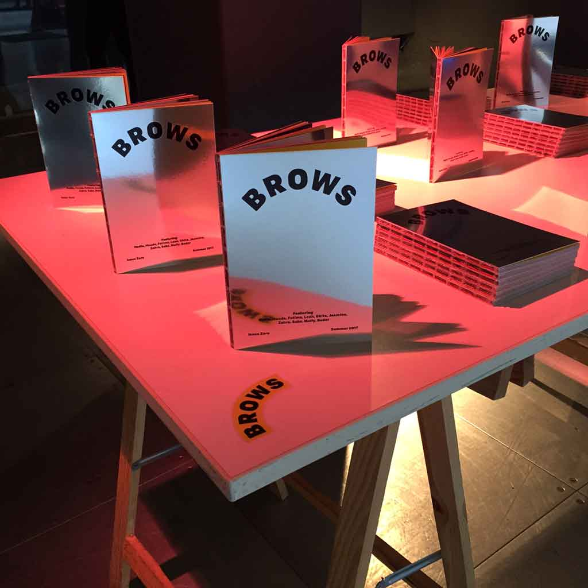

Brows
We worked with The Showroom and year 10 girls from King Solomon Academy to produce a new magazine. Over the course of 3 months we devised and delivered a series of workshops which would guide the group through the magazine making process. They brainstormed, researched and produce content for the magazine and organised a launch to celebrate its completion. Graphic design by Rose Nordin.